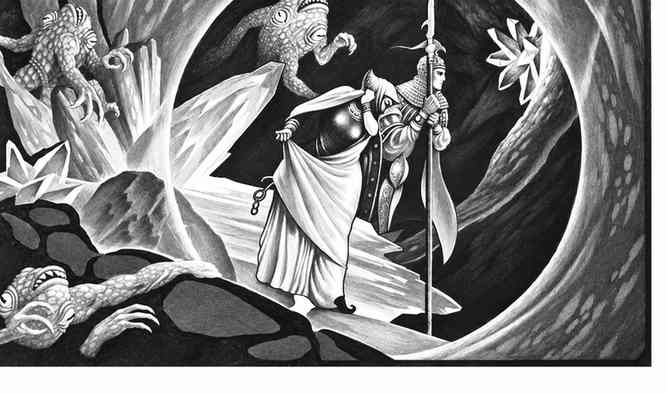

元素土位面 · The Plane of Elemental Earth
元素土位面是没有空气、没有开阔天空的巨大固体。旅行者若没有特殊能力，只能在岩石中被包围、挤压和窒息。这里的岩层并非静止：地震、断层、矿脉、化石和元素口袋不断改变环境。土元素、矿物生物、矮人、道恩（dao）以及各种被困在岩石中的生物都在此活动。

生存 · Survival
压力、呼吸与感官 · Pressure, Breathing, and Senses
旅行者一旦物质化在元素土位面，就会受到周围岩石的压力。没有保护的角色每轮受到压碎伤害；高等级角色也可能在救援前死亡。空气只存在于元素空气口袋和其他特殊空腔中，因此旅行者必须携带空气，或使用可在固体中呼吸、穿行的法术与物品。没有呼吸能力的生物会很快窒息。
旅行者通常是失明的。普通视觉无法穿过岩石，声音也会沿岩层传播，难以判断来源。拥有地底视觉、穿石或类似能力的生物，才能辨认通道、空腔和附近生物；即使如此，移动仍可能触发塌方或地震。
遭遇 · Encounters
每 10 小时有 1/10 的几率遭遇。d20 结果如下：
| d20 | 结果 |
|---|---|
| 1–5 | 元素现象 |
| 6–35 | 元素口袋 |
| 36–00 | 生物遭遇 |
元素现象 · Elemental Phenomena
用 d12 决定现象：
| d12 | 现象 |
|---|---|
| 1–4 | 地震 |
| 5–6 | 断层线 |
| 7–8 | 挥发性气体口袋 |
| 9 | 矿脉 |
| 10 | 化石 |
| 11 | 石化生物 |
| 12 | 通往原初位面的漩涡 |
地震会使岩层突然移动和断裂；旅行者应进行地震严重度判定，结果从轻微震动到严重塌陷不等。断层线是自然形成的开口，通常无人居住，却可能连接两个岩层或通往其他元素口袋。挥发性气体口袋可能有毒，也可能在遇到火焰时爆炸；矿脉、化石和石化生物则既是资源，也可能成为危险的诱饵。通往原初位面的漩涡会把旅行者送往地表、矿井或其他并不安全的地点。
元素口袋 · Elemental Pockets
土位面中的元素口袋通常是不规则的。d20 可决定其类型：空气、火焰、水、岩浆、软泥、尘土、矿物、烟、冰、真空、灰烬、盐、闪电、辐射或蒸汽口袋。空气口袋可能成为短暂的休息地；火焰和岩浆口袋会熔化周围岩石；水与冰口袋会使岩层破裂并制造突然的洪流。
矿物口袋可能含有宝石、金属或珍贵矿石，但也可能由准元素矿物生物守护。尘土、烟、盐、真空和辐射口袋分别按对应准元素位面的环境处理。旅行者若把口袋当作安全通道，往往会在出口处遭遇另一种元素的伏击。
生物遭遇 · Creature Encounters
土位面的生物多由岩石、金属、矿物或晶体构成，也有被埋在岩中的原初生物。它们通常免疫土元素塑形和石化效果；土元素、矿物生物与许多土位面原住民能够在岩石中穿行。土位面遭遇表包括土元素、土巨灵、沙地生物、晶怪、巨型甲虫、矿工、道恩、岩浆生物、幽灵和被困的原初居民；MM、MMII、FF 与 MM* 的注记沿用原书怪物书来源标记。
移动 · Movement
在土位面移动的问题与空气位面相反：这里没有可供飞行的介质。普通生物必须挖掘、穿石，或依靠原住民的通道。岩石的硬度决定速度：松软土和碎岩可由较弱角色挖掘，坚硬岩石需要更高力量或专门工具，不可破坏的岩层则只能靠魔法或伟大力量穿越。
旅行者可沿直线挖掘，但方向感很差；通常需要元素向导、地底地图或定位魔法。矿工可以开采矿脉，不过若没有妥善处理，掘出的岩石会堵死通道或引发震动。
战斗 · Combat
土位面中的战斗常受狭窄通道、坚硬岩层和视线限制。土元素与原住民能在岩石中移动，旅行者若不能穿石或使用以太位面通道，往往无法追击或撤退。远程攻击距离通常缩短；塌方、地震和突然出现的元素口袋会改变战场。土位面原住民对岩石和土的攻击通常不受惩罚，而无法辨认目标的旅行者会处于明显劣势。
魔法 · Magic
多数需要看到目标的法术在土位面难以施放；除非施法者能看穿岩石，否则只能攻击同一空腔中的目标。创造水、空气或其他物质的法术会形成局部口袋；制造土石的法术可能与周围岩层融合。穿石、塑石、地震和土元素相关法术通常更有用，但改变整个位面的天气、空气或岩层几乎不可能。
元素土位面的特征 · Features of Elemental Earth
土元素生物通常敌视原初位面来客，至少也会保持戒备。它们不愿离开自己的岩层，常把交易和谈判视为挖掘者试图夺取资源的伎俩。元素领主奥格雷莫奇（Ogremoch）是土位面的强大统治者，格伦巴尔（Grumbar）则是最古老、最强大的土元素之一。
道恩（Dao）是土位面的巨灵。他们在地下拥有城市和矿场，靠奴役、贸易和矿物资源维持势力。道恩会利用元素口袋中的财富，也会雇佣旅行者处理自己不愿承担的危险工作；但他们的契约往往有隐藏条款，违约者可能被永远封入岩石。
土元素与岩石、矿物和晶体相关的法术能够改变战场。与其他元素位面相连的法术可能以银色门、晶体通道或短暂的透明泡状结构出现；旅行者通过这些门时，通常会被带往施法者或召唤者指定的地点。